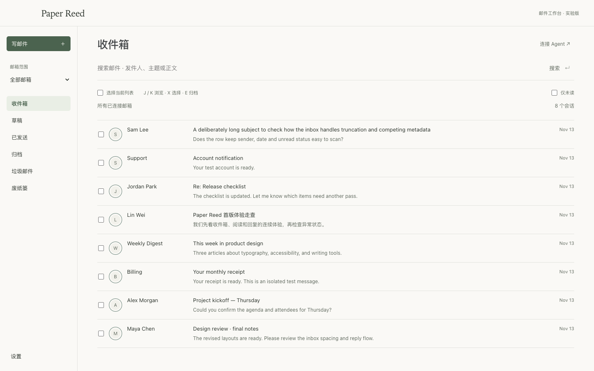
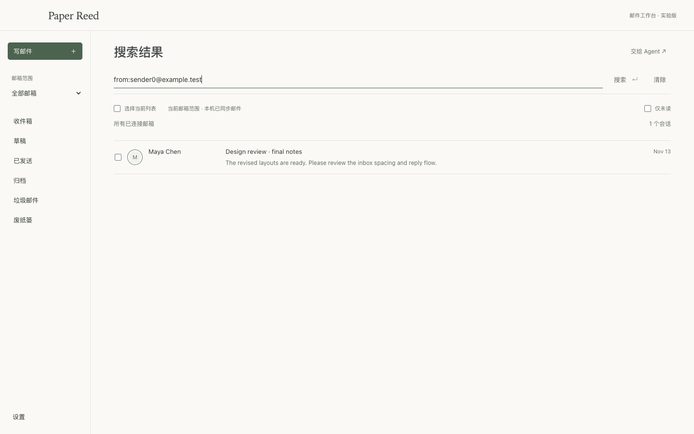
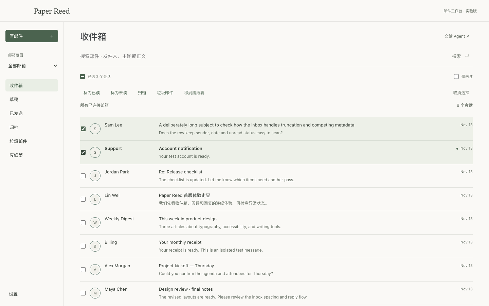
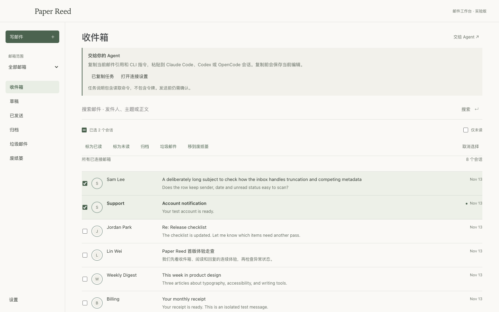
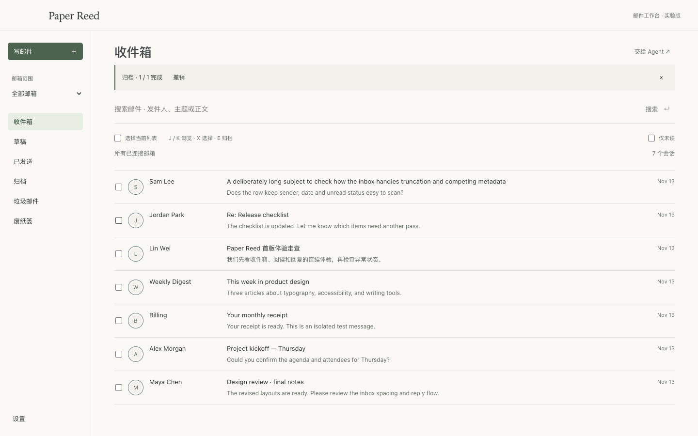
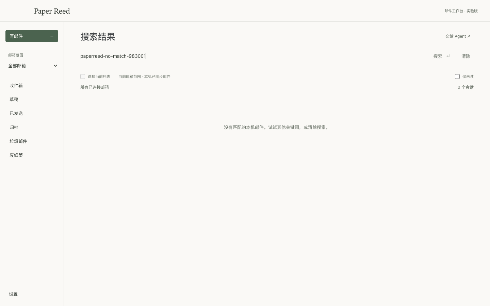
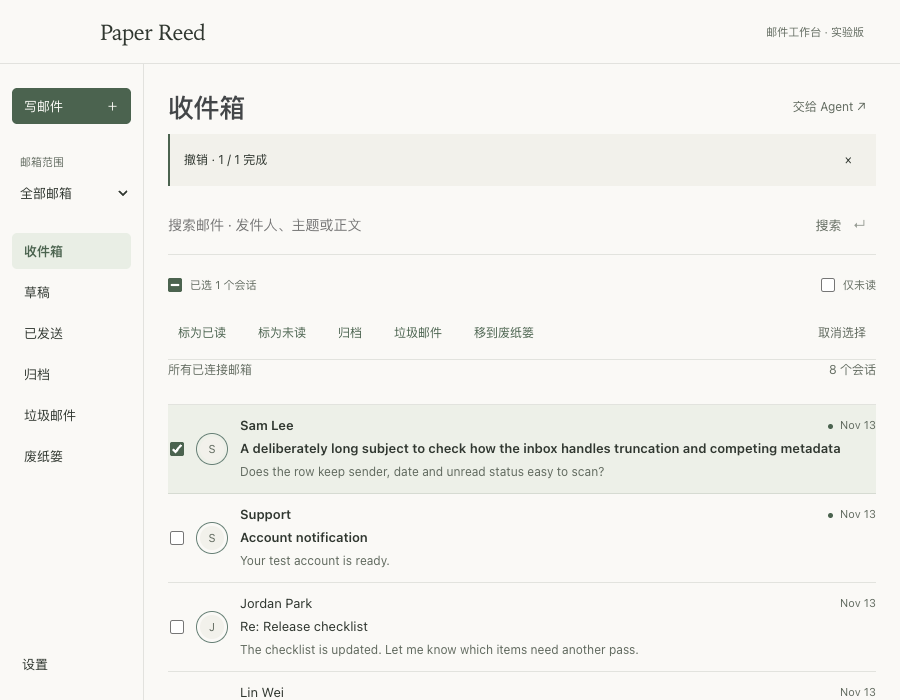

<!doctype html><html lang="zh-CN"><meta charset="utf-8"><meta name="viewport" content="width=device-width,initial-scale=1"><title>Paper Reed 收件箱与搜索</title><style>:root{--foreground:#303730;--muted-foreground:#626b60;--primary:#4b634f;--secondary:#f2f1eb;--border:#dfe2d9;--radius:6px;--font-sans:-apple-system,sans-serif}body{margin:0;font:13px/1.6 var(--font-sans);color:var(--foreground)}nav{display:flex;flex-wrap:wrap;gap:8px;margin-bottom:12px}button,select{font:inherit;background:transparent;border:1px solid var(--border);border-radius:var(--radius);padding:5px 10px;color:inherit;cursor:pointer}button[aria-pressed=true]{background:var(--secondary);color:var(--primary)}button:focus-visible,select:focus-visible{outline:2px solid var(--primary)}button:disabled{opacity:.45;cursor:default}[hidden]{display:none}figure{margin:0}img{display:block;width:100%;border:1px solid var(--border);border-radius:var(--radius);box-sizing:border-box}figcaption,footer{font-size:12px;color:var(--muted-foreground);margin:6px 0}a{color:var(--primary)}</style><nav><select aria-label="查看页面" id="page"><option value="inbox">收件箱</option><option value="search">搜索结果</option><option value="selection">批量选择</option><option value="selected-agent">勾选范围交接</option><option value="archive-result">整理回执</option><option value="empty-search">空搜索</option><option value="compact-selection">紧凑窗口</option></select></nav><figure data-page="inbox" ><figcaption>收件箱 · 实际 Electron 窗口</figcaption></figure><figure data-page="search" hidden><figcaption>搜索结果 · 实际 Electron 窗口</figcaption></figure><figure data-page="selection" hidden><figcaption>批量选择 · 实际 Electron 窗口</figcaption></figure><figure data-page="selected-agent" hidden><figcaption>勾选范围交接 · 实际 Electron 窗口</figcaption></figure><figure data-page="archive-result" hidden><figcaption>整理回执 · 实际 Electron 窗口</figcaption></figure><figure data-page="empty-search" hidden><figcaption>空搜索 · 实际 Electron 窗口</figcaption></figure><figure data-page="compact-selection" hidden><figcaption>紧凑窗口 · 实际 Electron 窗口</figcaption></figure><footer>本机 IMAP 测试邮箱；本轮 SMTP 提交为 0。搜索仅覆盖本地缓存。</footer><script>document.getElementById('page').onchange=function(){document.querySelectorAll('figure').forEach(f=>f.hidden=f.dataset.page!==this.value);};</script></html>